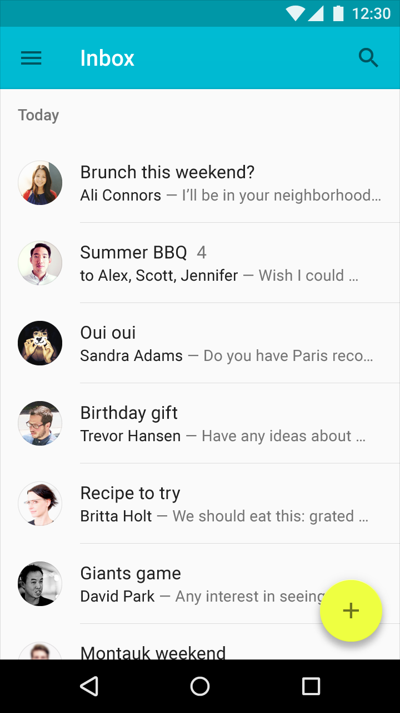
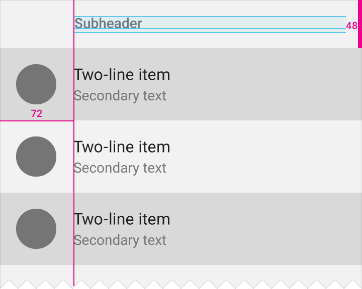
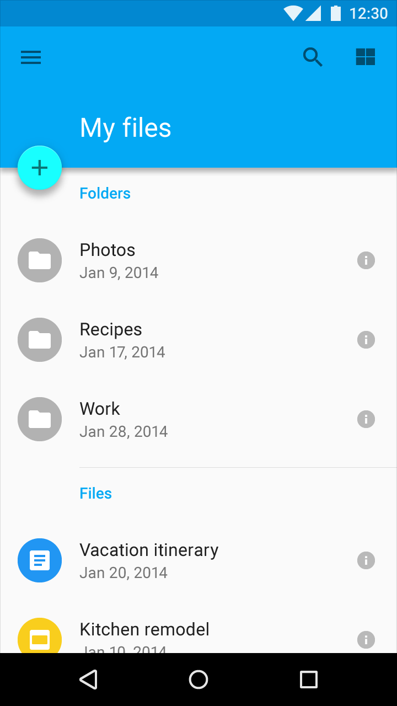

타일 높이: 48dp
서브헤더 폰트: Roboto Medium 14sp
서브헤더 색은 부수적인 회색 텍스트 값(54% 검정)이거나 아니면 앱의 주 색일 수 있습니다.
복잡한 정보의 긴 리스트에서, 내용물을 설명하기 위해 색이 있는 서브헤더를 사용하는 것을 고려해 보십시오. 서브헤더를 위한 색 사용의 예제는 안드로이드 설정에 있습니다.
서브헤더는 그 공간에 홍보된 액션이 있는 경우 외에는 리스트에서 아바타/아이콘과 함께 좌측 정렬되어 있어야 합니다.

회색 서브헤더
패딩: 16dp
서브헤더 타일 높이: 48dp

이메일 받은편지함에서 회색 서브헤더
리스트에 아바타/아이콘과 함께 좌측 정렬된 플로팅 액션 버튼이 있다면, 텍스트 내용물에 맞춰 서브헤더를 정렬하십시오.

좌측 정렬된 플로팅 액션 버튼과 함께, 서브헤더는 텍스트 내용물에 맞춰 정렬됩니다.
서브헤더 타일 높이: 48dp
플로팅 액션 버튼 타일 너비: 72dp

서브헤더는 앱의 주 색이며, 좌측 정렬된 플로팅 액션 버튼 때문에 텍스트에 맞춰 정렬됩니다.